Side screen
1920x1200 / 1200x750
Stage screen
3000x720
Pick this window's screen to start
1
Tunnel
2
Stripes
3
Mandala
4
Ghoomar
5
Patola
6
Jali
7
Damru
8
Shiv ·
C
colour
L
logo
F
fullscreen
Q
phone code
↑
↓
intensity
T
tap tempo